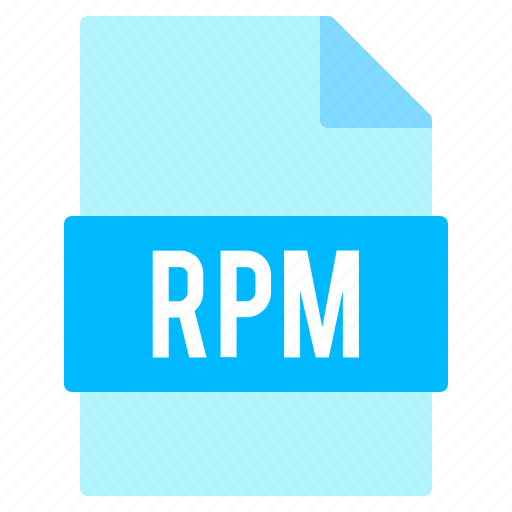

---
# front matter tells Jekyll to process Liquid
---
<!DOCTYPE html>
<html lang="en">
<head>
  <meta charset="utf-8">
  <meta name="viewport" content="width=device-width, initial-scale=1, shrink-to-fit=no">
  <meta name="description" content="Le dictionnaire mobile en français !">
  <meta name="author" content="camarm">
  <link rel="stylesheet" href="https://cdn.jsdelivr.net/npm/bulma@0.9.3/css/bulma.min.css" />
  <link rel="stylesheet" href="assets/styles.css" />
  <link rel="icon" href="/assets/icon.png">
  <script src="https://kit.fontawesome.com/2828f7885a.js" integrity="sha384-WAsFbnLEQcpCk8lM1UTWesAf5rGTCvb2Y+8LvyjAAcxK1c3s5c0L+SYOgxvc6PWG" crossorigin="anonymous"></script>
  <title>Remède | Télécharger</title>
  <meta property="og:title" content="Remède | Le dictionnaire" />
  <meta property="og:url" content="https://remede.camarm.fr" />
  <meta property="og:image" content="/og.png" />
</head>
<body>
<nav class="level is-mobile">
  <div class="level-left">
    <div class="level-item is-justify-content-left">
      <a href="/">
        
      </a>
    </div>
  </div>
  <div class="level-right">
    <div class="level-item is-justify-content-right also-mobile">
      <a class="has-font-weight-bold">contact@camarm.dev</a>
    </div>
  </div>
</nav>
<section class="section is-medium">
  <div class="columns is-centered is-align-items-center is-justify-content-center">
    <div class="column is-half">
      <h1 class="title is-large has-text-grey">
        Télécharger pour <span class="has-text-secondary">Linux</span> !
      </h1>
    </div>
    <div class="column is-half is-flex is-align-items-center is-justify-content-center">
      <a class="box" style="margin: 0 1em 0 0;" href="https://github.com/camarm-dev/remede/raw/main/builds/1.0.0/remede_1.0.0_amd64.deb?download=true" download>
        <i class="image is-64x64">
          
        </i>
      </a>
      <a class="box" href="https://github.com/camarm-dev/remede/raw/main/builds/1.0.0/remede-1.0.0-1.x86_64.rpm?download=true" download>
        <i class="image is-64x64">
          
        </i>
      </a>
    </div>
  </div>
</section>
<footer class="section">
  <div class="container">
    <div class="pb-2 is-flex is-flex-wrap-wrap is-justify-content-between is-align-items-center">
      <div class="mr-auto mb-1">
        <a class="is-inline-block" href="#">
          </a>
      </div>
    </div>
    <div class="pt-5" style="border-top: 1px solid var(--border);"></div>
  </div>
  <div class="container">
    <div class="is-flex-tablet is-justify-content-between is-align-items-center">
      <p>All rights reserved © Remède</p>
      <div class="py-2 is-hidden-tablet"></div>
      <div class="ml-auto">
        <a class="mr-4 is-inline-block" href="https://play.google.com/dev" target="_blank"><i class="fab fa-google-play"></i> Play Store</a>
        <a class="mr-4 is-inline-block" href="mailto:software@camarm.dev"><i class="fas fa-envelope"></i> Email</a>
        <a class="mr-4 is-inline-block" href="https://github.com/camarm-dev/remede"><i class="fab fa-github"></i> Github</a>
      </div>
    </div>
  </div>
</footer>
</body>
</html>